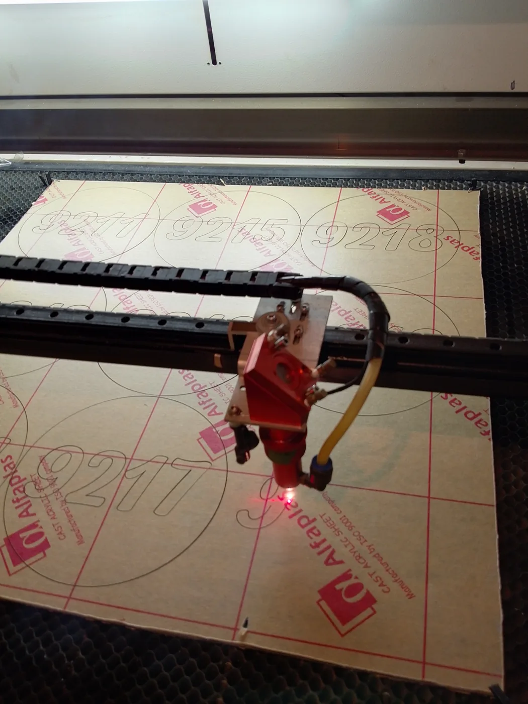
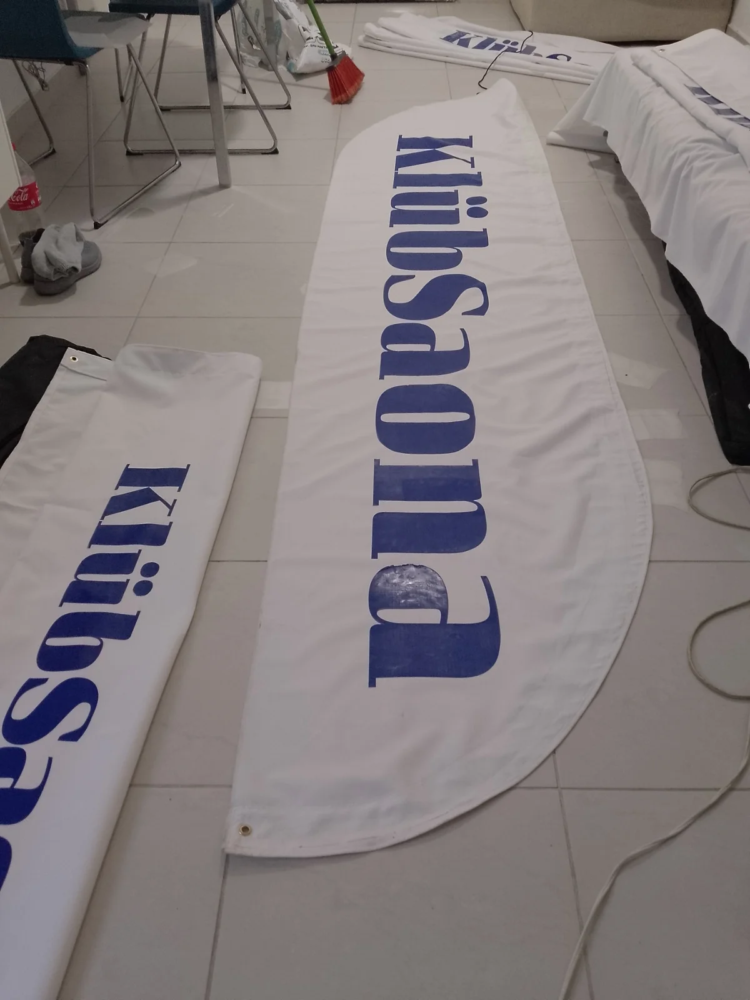

El taller
Diseño, materiales
y fabricación.
Santiago Sosa Studio combina diseño gráfico y producción para convertir ideas y necesidades concretas en piezas físicas para negocios y espacios.

De la idea al objeto.
Diseñamos y fabricamos señalización, rotulación, piezas en acrílico y soluciones gráficas aplicadas. Cada proyecto se evalúa según su uso, dimensiones, materiales, acabado y lugar de instalación.
El corte y grabado láser CO₂ forma parte de nuestras capacidades de fabricación. Evaluamos cada pieza según su diseño, material y aplicación.
Cómo trabajamos
Cada paso tiene su propósito.
Consulta
Entendemos la pieza, su uso, cantidad y fecha deseada.
Propuesta
Definimos diseño, alcance y presupuesto.
Aprobación
Acordamos los detalles antes de fabricar.
Fabricación
Producimos la solución acordada.
Entrega o instalación
Según lo cotizado. La instalación considera complejidad, ubicación y desplazamiento.
El proceso en detalle
Diseñar. Cortar. Preparar. Fabricar. Terminar.
Cada pieza pasa por diferentes etapas según el material, la aplicación y el acabado requerido.
Tecnología donde aporta precisión. Trabajo manual donde el acabado lo requiere.




De una idea podemos empezar.
Si tienes una referencia, unas medidas o una necesidad concreta, podemos evaluar cómo llevarla a producción.